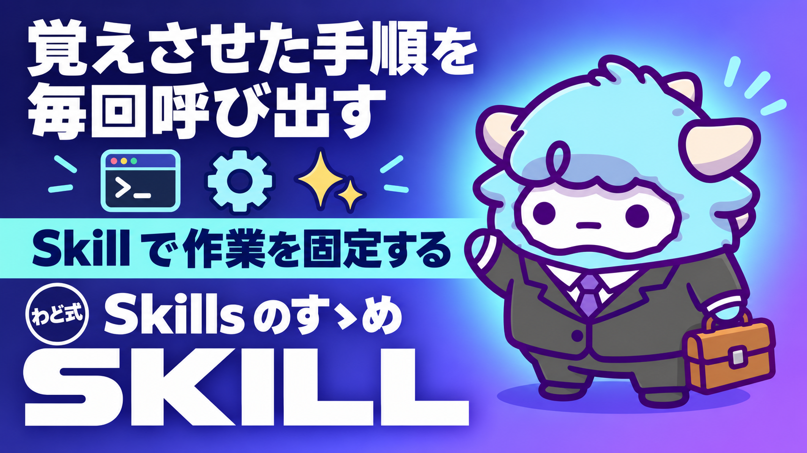

Skills のすゝめ わど版
最初の1スキルを30分で作る。skill-creator の使い方と3つの型
このページが特典の本体です。下へスクロールして使ってくださいSkills のすゝめ わど版
あなたの決まった手順を、Claudeに「型」として持たせる方法です。読み終える頃には、30分で動く最初の1つが手元にあります。
はじめに
同じ指示を、何度も貼り直していませんか。
「この形式で書いて」「この順番で確認して」「これは書かない」。毎回同じことを言っているなら、それはもうプロンプトではなく、Claudeに持たせるべき「型」です。
Claudeには Skill（スキル）という仕組みがあります。手順・判断基準・出力形式を1つのフォルダにまとめておき、必要なときにAI自身が読みに行く仕組みです。一度作れば、次からは貼り直す手間が消えます。
この特典では、Skillを作るための公式ツール「skill-creator」の使い方と、実際に作るときの3つの型を渡します。難しそうに見えますが、最初の1個は思っているより小さく作れます。30分あれば、動くところまで到達します。
情報の目安は2026年9月時点のものです。AIの仕組みは変わるのが速いので、実際に使う前に必ず最新の状況を確認してください。
この特典の進め方
上から順に読んでください。途中で手を止めて、実際に手を動かす箇所があります。
- Skillが何かを知る（読むだけ）
- 3つの型のうち、自分に近いものを選ぶ（選ぶだけ）
- 実際に1個作ってみる（手を動かす。ここが本番）
- 迷ったときの基準を持っておく（読むだけ）
- 最新AIでの変わり目を知っておく（読むだけ）
3番目まで進めば、この特典の目的は達成です。残りは「持っておくと安心な予備知識」だと思ってください。
最初のゴール（今日やる1つ）
読み終えたら、これだけ埋めてください。
■ 今、同じ指示を3回以上貼り直している作業：
■ その作業は3つの型のどれに近いか（手順型／判断基準型／出力形式型）：
■ 今日、Skillの指示書を1本書いてみる（30分以内）：
■ いつやるか（時刻を書く）：
「そのうち作る」は、ほぼ作られません。今日の予定に時刻ごと入れてください。
Skillとは何か（この地図の読み方）
Skillは、次の3つを1つのフォルダにまとめたものです。
| 要素 | 中身 | 必須か |
|---|---|---|
| 指示書（本体） | 何をするか・いつ使うか・どう進めるか | 必須 |
| 参照ファイル | 判断の根拠になる資料。必要なときだけ読み込まれる | 任意 |
| 実行用の補助ファイル | 決まった処理を毎回同じように行うための道具 | 任意 |
大事なのは、AIが「必要なときだけ、必要な分だけ読みに行く」という設計になっている点です。指示書の中に何もかも詰め込む必要はありません。よく使う判断基準は参照ファイルに逃がし、指示書は「いつ・何を・どう」の骨組みだけに絞ります。
指示書には最低でも2つの情報が要ります。1つは名前、もう1つは「これはいつ使うものか」という説明です。この説明が曖昧だと、AIは必要な場面でも使ってくれません。逆に「こういう言い方をされたら必ず使ってください」というくらい踏み込んで書くと、ちゃんと拾ってくれるようになります。
3つの型 一覧（表・向き不向き）
Skillを作るとき、最初に迷うのが「何を作ればいいのか」です。実際に作られているものを見ると、だいたい3つの型に分かれます。
| 型 | 何を固定するか | 向いている作業 | 向いていない作業 |
|---|---|---|---|
| 手順型 | 決まった順番でやる作業の流れ | 毎回同じ手順を踏む定型業務（記録・整形・確認） | 毎回中身が大きく変わる創作作業 |
| 判断基準型 | 良し悪しを決める物差し | 「これは自分の基準ではNG」を毎回説明している作業 | 基準がまだ自分の中で固まっていない作業 |
| 出力形式型 | 出てくるものの形 | 見出しの順番・項目数を毎回そろえたい作業 | 形式を毎回変えたい自由度の高い作業 |
3つは排他ではありません。実際には「手順型のなかに出力形式型が入っている」ということがよくあります。迷ったら、いちばん困っている1つだけを最初の型に選んでください。全部を一度に固定しようとすると、最初の30分で終わりません。
3つの型を身近な作業に当てはめると
「発信」「集客」のような大きな言葉のままだと、どの型にすればいいか決めにくいです。具体的な作業に落として考えてください。
- 手順型の例：note記事やBrain記事を書くとき、「構成を決める→下書きを書く→見出しを調整する→投稿前に読み返す」という順番をいつも同じにしたい。この順番そのものを指示書にします。
- 判断基準型の例：Instagramのストーリーズで、「これは自分のトーンに合わない」「この言い回しは軽すぎる」と、毎回頭の中で判断していることがあるはずです。その判断を言葉にして渡すと、次からはAIがその基準で先にふるいにかけてくれます。
- 出力形式型の例：X（旧Twitter）に投稿するとき、毎回いくつかのパターン（問いかけ型・結論先出し型・体験談型など）で書き分けたい場合、そのパターンの型を先に決めて渡します。出てくる案の形がそろい、選ぶだけで済むようになります。
自分の作業がどれに近いか分からないときは、「毎回、口頭で何を付け足しているか」を思い出してください。付け足している内容が、そのままどの型を選ぶかの答えになります。
30分で作る手順（決める→書く→試す）
Skillを作るための公式ツールは、次の4つを最初に決めることから始めます。
- AIに何をさせたいか
- どんな言い方をされたら、このSkillを使ってほしいか
- 出てくるものの形はどうなっているべきか
- うまくできたかどうかを、後で確かめる方法はあるか（無くても構いません）
この4つに答えるだけで、指示書の骨組みが決まります。ここまでで10分です。
次に、実際に書きます。名前と説明を書き、その下に「どう進めるか」を箇条書きで書きます。細かい理由まで書く必要はありません。「なぜこの順番なのか」を一言添えるだけで、AIは状況に応じて柔軟に動けるようになります。ここまでで15分です。
最後に、実際にその場面が来たときと同じ言い方で、AIに話しかけてみます。狙いどおりに拾って動いたか、動かなかったか、出てきたものの形は合っているか。合っていなければ、指示書のどこが曖昧だったかを直します。1回で完璧になることはほとんどありません。ここまでで5分、合計30分です。
直すときのコツは1つだけです。「絶対に」「必ず」を増やすのではなく、「なぜそうしてほしいのか」を1行足してください。理由が伝わると、細かく縛らなくても狙いどおりに動くようになります。
手順型で30分やってみた例（note記事の場合）
イメージが湧きにくい方のために、手順型を選んだ場合の30分の中身を具体的に書きます。
- 決める（10分）：「note記事を、構成→下書き→見出し調整→投稿前チェックの順で書きたい」と1文にする。いつ使ってほしいかも決める（「note記事を書いて、と言われたとき」）。
- 書く（15分）：名前と説明を書いたあと、4つの手順を箇条書きにする。それぞれの手順に「なぜこの順番か」を一言添える（例：見出し調整を下書きの後に置くのは、本文が固まってから見出しを決めたほうがズレないため）。
- 試す（5分）：実際に「note記事を書きたい」と話しかけ、4つの手順どおりに進むかを見る。順番が飛ばされたら、説明の書き方を1行直す。
この例のとおり、最初から完璧な文章を書く必要はありません。順番と理由さえ伝われば、細かい言い回しは後から整えられます。
迷ったときの選び方（3つの質問）と乗り換えの判断
Skillを作るべきかどうかは、次の3問で決まります。
Q1. 同じ指示を、この1か月で3回以上貼り直したか？
NO → まだ早いです。今のまま、貼り直しを続けてください
YES → Q2へ
Q2. 貼り直すたびに「あ、これも言わなきゃ」が増えているか？
YES → 指示が肥大化しているサインです。Skill化の候補です
NO → Q3へ
Q3. 出てくるものの形を、毎回そろえたいと思っているか？
YES → 出力形式型から作ってください
NO → 今のところは、保存しておいたプロンプトのままで十分です
すでに保存したプロンプトや、対話型のチャットボットを持っている人もいるはずです。それらをSkillに乗り換える判断基準は、「毎回中身を貼り直しているか」の1点です。フォルダにまとめておけば呼び出すだけで済み、参照ファイルを増やしても指示書自体は太りません。逆に、1回きりしか使わないものをわざわざSkillにする必要はありません。
最新AI（2026年9月時点）で増えた選択肢
2026年9月3日（米国時間）に、OpenAIから画面操作の精度を大きく上げた新しいモデルが発表されました（取得日: 2026-09-06）。画面に表示されている情報を読み取り、許可された範囲でアプリを直接操作できる、という位置づけです。操作系のテストでは、前のモデルの65.7%から72.6%まで伸びたという報道があります（取得日: 2026-09-06）。
このモデルは、契約者全員に一斉に配布されるのではなく、少しずつ広がっていく方式が取られています（取得日: 2026-09-06）。同じ契約プランでも、自分の画面にまだ出ていない場合があります。焦らず、モデルを選ぶ画面で名前がそのまま表示されているかを確認してください。
AIが画面や操作まで任せられるようになるほど、Skillの役割は逆に重くなります。何をしてよくて、何をしてはいけないかを事前に決めておかないと、任せられる範囲が広い分だけ、意図しない動きにつながりやすくなるからです。強いモデルほど、指示書の「やらないこと」が効いてきます。
次の一手
この特典は、AIで成果を上げるまでの「稼ぐ順番」で言うと、STEP1（最初の1件を取る）を支える土台にあたります。手順・判断基準・出力形式のどれか1つでも固定できれば、同じ質を保ったまま作業のスピードが上がります。
面談では、あなた専用の1枚（特注のロードマップ）を一緒に作ります。
最初に投げるプロンプト
Skillの骨組みを一緒に決めたいときは、AIにこのまま貼ってください。
あなたはSkill設計のアシスタントです。
私がこれから、繰り返している作業を説明します。
次の4つを、私に質問しながら一緒に決めてください。
1. AIに何をさせたいか（1文で）
2. どんな言い方をされたら、この作業だと気づいてほしいか（3つ以上）
3. 出てくるものの形はどうなっているべきか
4. うまくできたかどうかを、どうやって確認するか
すべて決まったら、Skillの指示書の下書きを、
名前・説明・手順の3つに分けて書き出してください。
専門用語は使わず、短い文で書いてください。
【繰り返している作業の説明】
（ここに、いつも貼り直している指示や作業内容を書く）
よくある失敗 7つと直し方
- 最初から完璧な指示書を書こうとする → 30分で動く最小版を作り、使いながら直します。
- 1個のSkillに複数の役割を詰め込む → 型を1つに絞ります。迷ったら「今いちばん困っている1つ」だけです。
- 説明（いつ使うか）を曖昧に書く → 「こういう言い方をされたら必ず使う」というくらい踏み込んで書きます。
- 「絶対に」「必ず」を増やして縛ろうとする → 縛る代わりに、なぜそうしてほしいかの理由を1行足します。
- 作ったことを忘れる → 名前と一言メモの一覧を1か所にまとめておきます。増えるほど効いてきます。
- 1回試して動かなかったのでやめる → 1回で完璧になることはほとんどありません。曖昧だった箇所を1つだけ直して、もう一度試します。
- 個人情報や機密の判断基準をそのまま書き込む → 具体的な固有名詞は伏せ字にするか、外部に渡さない前提で保管します。
安全に使うための注意
- 参照ファイルや実行用の補助ファイルには、個人情報や機密にあたる情報を直接書き込まないでください。
- 画面を直接操作できるAIを使う場合は、画面に映すものを選んでください。表示された文字がそのまま指示として読み取られてしまうリスクが指摘されています（取得日: 2026-09-06）。触ってよい範囲を先に決めてから使ってください。
- 出力をそのまま公開・送信する前に、必ず人の目で最終確認してください。Skillを使っていても、出力は下書きです。
- 料金プランのあるAIツールを使う場合は、契約前に公式サイトで最新のプランを確認してください。
つまずいたときに聞くプロンプト
作ったSkillが思ったように動かないときは、これをそのまま貼ってください。
私は今、作ったSkillが狙いどおりに動きません。
以下を読んで、原因が「説明（いつ使うか）の曖昧さ」なのか、
「手順の書き方」なのか、「型の選び方」なのかを判定してください。
判定したら、直すべき箇所を1つだけ、具体的に教えてください。
【作ったSkillの名前と説明】
【期待していた動き】
【実際に起きたこと】
用語集
- Skill：手順・判断基準・出力形式を1つのフォルダにまとめ、必要なときにAIが読みに行く仕組み。
- 指示書：Skillの本体。名前・いつ使うか・どう進めるかを書いたもの。
- 参照ファイル：判断の根拠になる資料。必要なときだけ読み込まれる。
- 実行用の補助ファイル：決まった処理を毎回同じように行うための道具。
- 手順型：決まった順番でやる作業の流れを固定する型。
- 判断基準型：良し悪しを決める物差しを固定する型。
- 出力形式型：出てくるものの形を固定する型。
- 段階配布：新しいAIモデルが、契約者全員に一斉ではなく、少しずつ広がっていく提供方式。
出す前の品質チェック（10項目）
Skillを人に見せる前、あるいは実際の作業に使う前に、この10項目を確認してください。
- 名前と説明（いつ使うか）を書いたか
- 説明は「こういう言い方をされたら使う」というレベルまで具体的か
- 型を1つに絞ったか（複数を詰め込んでいないか）
- 手順は箇条書きで、理由が1行添えてあるか
- 出力の形式を決めている場合、その形式を明記したか
- 個人情報・機密にあたる情報を書き込んでいないか
- 実際にその場面と同じ言い方で1回試したか
- 動かなかった箇所を1つに絞って直したか
- 作ったSkillの名前と一言メモを一覧にまとめたか
- 今日やること・時刻を決めたか
最終チェックリスト
- [ ] 同じ指示を貼り直している作業を1つ書き出した
- [ ] その作業が3つの型のどれに近いかを決めた
- [ ] Skillの指示書の下書き（名前・説明・手順）を書いた
- [ ] 実際にその場面と同じ言い方で1回試した
- [ ] 動かなかった箇所を1つ直した
- [ ] 個人情報・機密を書き込んでいないか確認した
- [ ] 作ったSkillの名前と一言メモを一覧にまとめる予定を立てた
- [ ] 今日やること・時刻を書いた